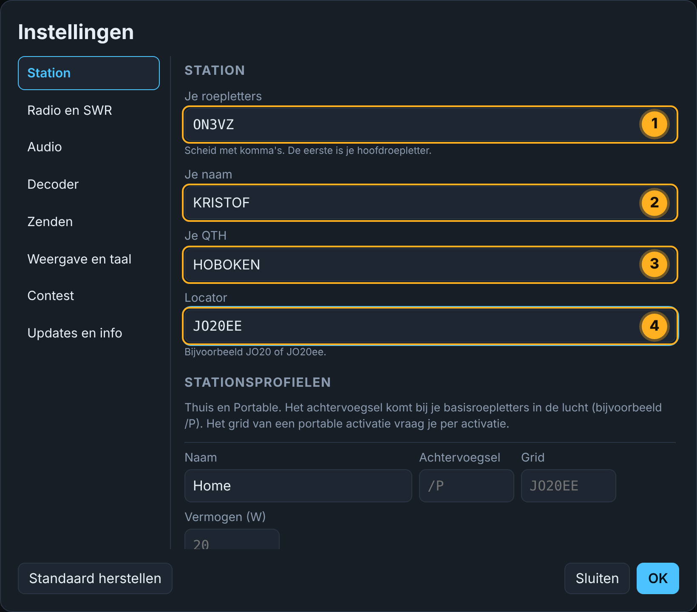
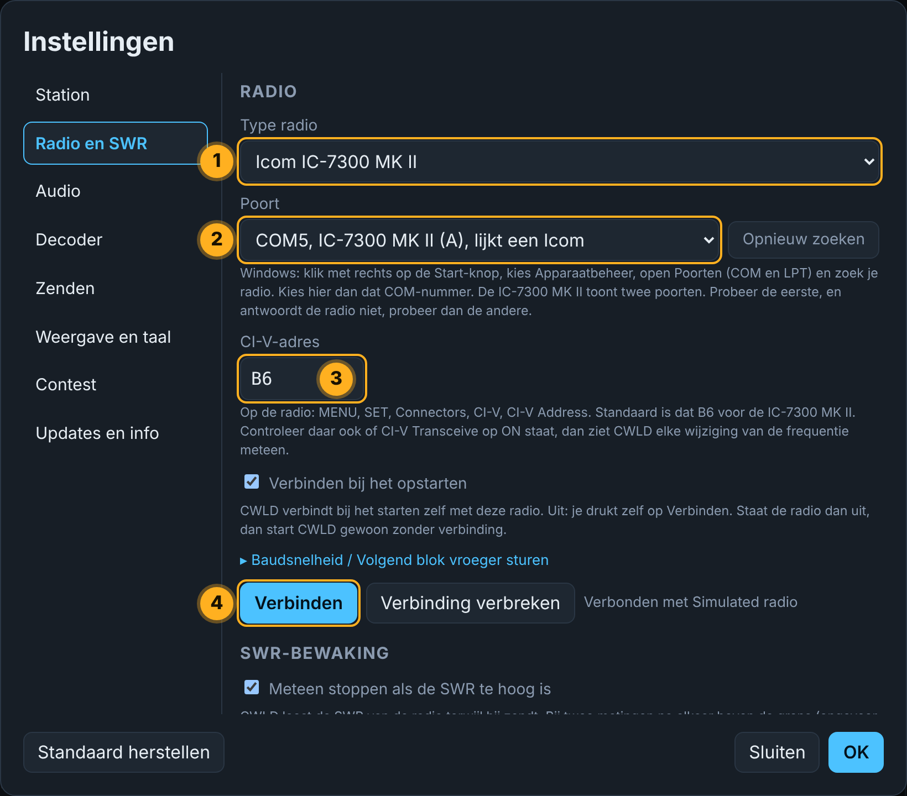
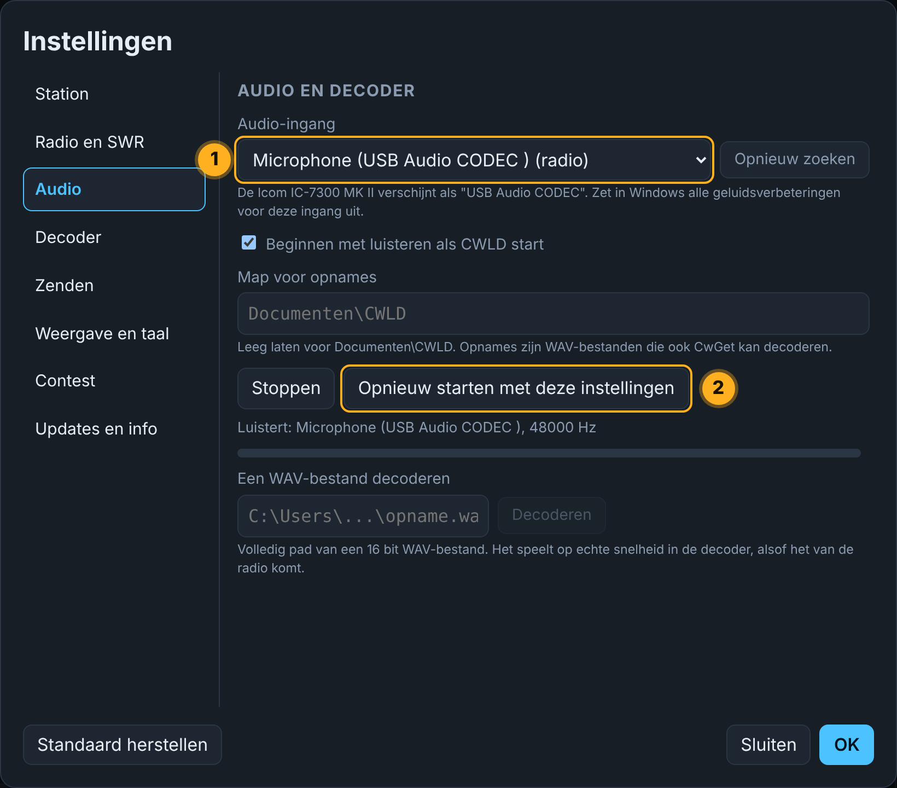

1CWLD installeren
Download het installatieprogramma
Druk op de knop hieronder. Het bestand eindigt op -setup.exe. Je browser kan vragen of je het wilt bewaren: kies Bewaren.
Start het en kom voorbij SmartScreen
Dubbelklik op het gedownloade bestand. Windows kan een blauw venster tonen omdat CWLD nog niet digitaal ondertekend is. Je computer loopt geen gevaar: het programma is open source en elke versie wordt op GitHub gebouwd.
- Klik op Meer info (1).
- Er verschijnt een knop Toch uitvoeren (2). Klik erop.
Rond de installatie af
Klik op Volgende, behoud de voorgestelde map, klik op Installeren en dan op Voltooien. CWLD start.
2De IC-7300 MK II verbinden
Doe deze stappen in volgorde. De eerste keer duurt het ongeveer tien minuten.
Steek de USB-C-kabel in
Verbind de USB-C-poort van de radio (1) met een USB-poort van je pc (2) met een kabel die data doorgeeft. Zet de radio aan.
Zet CI-V Transceive aan, in de radio
Hierdoor meldt de radio zelf aan CWLD wanneer je aan de knop draait of van band wisselt, zodat de frequentie op het scherm live meebeweegt.
- Druk op MENU (1).
- Open SET (2).
- Open Connectors (3).
- Open CI-V (4).
- Zet CI-V Transceive op ON (5). Laat CI-V Address op de standaardwaarde,
B6.
Zoek de COM-poort in Windows
- Klik met de rechtermuisknop op de knop Start en kies Apparaatbeheer.
- Klik op het pijltje naast Poorten (COM en LPT).
- Je ziet twee poorten voor de radio. Onthoud het nummer van Serial Port A (CI-V) (1), bijvoorbeeld COM5.
Vul je station in, in CWLD
Klik op het tandwiel rechtsboven in CWLD om de instellingen te openen en dan op het tabblad Station. Vul je eigen roepletters in. Grid en vermogen zijn voorlopig optioneel.

Verbind de radio
Open het tabblad Radio.
- Kies het Radiotype (1): IC-7300 MK II.
- Kies de Poort (2) uit stap 3.
- Controleer dat het CI-V-adres (3)
B6is. - Klik op Verbinden (4).
Vink Verbinden bij het starten van CWLD aan als je wilt dat dit de volgende keer vanzelf gebeurt.

Kies het geluid
Open het tabblad Audio. Kies USB Audio CODEC als audio-ingang (1) en klik dan op Herstart met deze instellingen (2).

Sta toe dat CWLD de microfooningang gebruikt
Voor Windows telt het radiogeluid als microfoon. Zie je geen waterfall, controleer dan dit:
- Klik op Start, typ microfoon privacy en druk op Enter.
- Zet de drie schakelaars aan zoals hieronder.
- Open ook de geluidsinstellingen van Windows en zet de geluidsverbeteringen uit voor de USB Audio CODEC.
3De QMX verbinden
Ook de QMX gebruikt één USB-C-kabel. Hij verschijnt in Windows als een virtuele COM-poort.
Steek in en zoek de poort
Verbind de QMX en zoek de COM-poort in Apparaatbeheer zoals in stap 3 hierboven.
Maak de zijtoon luid genoeg
CWLD luistert naar de zijtoon van de QMX. Open in het menu van de QMX Audio, zet Sidetone volume hoog (1), bijvoorbeeld 99, en Sidetone abs/rel op Relative (2).
Verbind in CWLD
Doe hetzelfde als voor de IC-7300 MK II: Instellingen, Radio, kies de QMX als radiotype, de poort, en dan Verbinden. Kies daarna de audio-ingang van de QMX in het tabblad Audio en herstart.
4Controleren of het werkt
Je bent klaar als je dit ziet
- De statusbalk meldt dat de radio verbonden is.
- Je draait aan de knop van de radio en de frequentie op het scherm volgt meteen.
- De waterfall beweegt en je ziet een signaal als er een CW-station is.
- In LISTEN-modus verschijnt de gedecodeerde tekst in het gesprek.

5Als er iets mis is
CWLD vindt de radio niet
Controleer dat de radio aan staat en de kabel data doorgeeft. Open Apparaatbeheer (rechtsklik op Start) en kijk onder Poorten (COM en LPT). Kies in CWLD de eerste poort en, als er geen antwoord komt, de tweede. Controleer dat het CI-V-adres B6 is.
De frequentie op het scherm volgt de radio niet
Zet CI-V Transceive aan in de radio: MENU, SET, Connectors, CI-V. CWLD vraagt de radio ook af en toe om de frequentie, maar met Transceive gaat het meteen.
De waterfall is leeg en er wordt niets gedecodeerd
Kies in Instellingen, Audio, USB Audio CODEC en klik op Herstart met deze instellingen. Controleer dan de drie microfoon-privacyschakelaars van Windows en zet geluidsverbeteringen uit. Zorg dat er een CW-signaal in het filter van de radio staat en dat het AF-niveau niet nul is.
Windows of mijn antivirus blokkeert het installatieprogramma
CWLD is nog niet digitaal ondertekend, dus Windows is voorzichtig. Klik op Meer info en dan op Toch uitvoeren. Verwijdert een antivirus het bestand, vergelijk dan de SHA-256-controlesom met die in het downloadgedeelte en sta het bestand toe.
Meer antwoorden staan op de helppagina.